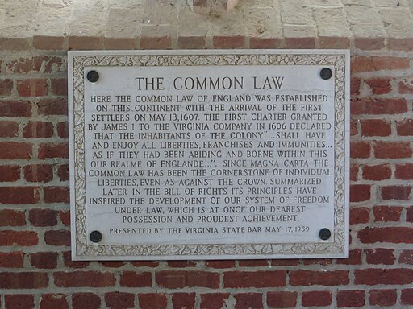

Como te has podido dar cuenta en los temas anteriores, el Derecho ha evolucionado de manera heterogénea y muy diversa a lo largo de la historia de la civilización, dependiendo siempre de circunstancias geográficas específicas, pero también eventos políticos, sociales y creencias religiosas.
Las familias jurídicas son grupos de sistemas jurídicos que comparten características comunes, tales como su origen histórico. Para simplificar este concepto, piensa en el concepto de una familia como la tuya, en donde todos comparten características afines, pero cada integrante tiene sus propias diferencias.
Tomemos como ejemplo a México y su sistema jurídico, en esencia es muy parecido al de un gran número de países de América Latina, pues comparten un mismo origen, todos tienen en común la tradición jurídica romano-canónica; no obstante, cada uno conserva características propias.
El Derecho Romano estaba basado en principios de equidad, costumbre y legislación escrita. Como ejemplo de su evolución te pido pienses en este concepto de "equidad" y lo que significa para ti el día de hoy... Pues dicho concepto para el Derecho Romano se modificó con el tiempo, y no fue un principio central en las primeras etapas. Inicialmente, el Derecho Romano estaba más inclinado hacia la preservación de las estructuras sociales existentes y los privilegios de las clases dominantes. La equidad y la igualdad ante la ley no eran los principios predominantes en los primeros tiempos de este sistema legal y no todas las personas eran consideradas sujetos de derecho.
Como ya hemos visto en temas anteriores, la influencia del Derecho Romano abarcó gran parte de Europa, siendo preservado y adaptado por diversas culturas. La tradición jurídica romana, con sus instituciones y conceptos legales, sentó las bases para el sistema legal moderno de muchos países en el mundo. Dicho sistema legal, conformado a partir del Corpus Iuris Civilis fundó principios legales que perduran hasta el día de hoy.
En este mismo periodo de tiempo la iglesia católica desarrolló sus propias leyes que establecían normas y regulaciones para la comunidad religiosa, éstas dieron lugar al sistema legal conocido como Derecho Eclesiástico. A medida que la iglesia creció en influencia en Europa, no sólo con las personas creyentes, sino también dentro de los mismos estados y sus gobiernos, surgió lo que se conoce como Derecho Canónico, esto gracias a que obtuvo su propia jurisprudencia y se conformaron tribunales religiosos.
Durante la Edad Media, la iglesia desempeñó un papel central en la interpretación y aplicación del derecho. Fue así como los cánones eclesiásticos, que abordaban, entre otras cosas, asuntos morales y espirituales, se entrelazaron con el derecho romano, uniendo ambos sistemas legales en uno solo.
Esta fusión de lo canónico y lo romano sentó las bases para el sistema legal que se expandiría en Latinoamérica a partir de la Colonia. Para regular los territorios colonizados en América, se promulgaron las "Leyes de Indias", dichas leyes se basaban en una mezcla de normas españolas y elementos del Derecho Romano y Canónico, establecían la administración, la justicia y la organización social en las Colonias.
Se establecieron instituciones como las Reales Audiencias y los Cabildos, que actuaban como tribunales y órganos de gobierno locales, respectivamente. A medida que la sociedad colonial evolucionaba, se produjo una mezcla de tradiciones legales indígenas y españolas. Fue así como surgieron sistemas híbridos y adaptaciones locales que reflejaban la realidad social y cultural de la Nueva España.
Posteriormente con la independencia de las colonias americanas, se redefinieron las instituciones legales heredadas de la Colonia. Esto implicó una revisión crítica de los elementos romano-canónicos en el sistema legal de la época. Uno de los cambios más significativos fue la inclusión de principios de soberanía nacional en las nuevas constituciones.
La separación eclesiástica del derecho en México tuvo lugar durante el siglo XIX, específicamente con la promulgación de las Leyes de Reforma. Estas leyes, promulgadas entre 1855 y 1863, marcaron un período de reformas radicales en de la sociedad y la separación de la Iglesia y el Estado. Uno de los objetivos principales de estas leyes era reducir el poder e influencia de la iglesia católica en asuntos civiles y políticos. Entre las medidas más destacadas estuvo la confiscación de propiedades eclesiásticas y la eliminación de ciertos privilegios y fueros eclesiásticos.
La separación eclesiástica del derecho en México se inicia con las Leyes de Reforma. Imagen de AlejandroLinaresGarcia, Wikimedia Commons.
Aunado a esto con la Ilustración y las revoluciones europeas, que promovían la igualdad de derechos y la separación de poderes, tuvieron una influencia significativa en la reconfiguración de los sistemas legales latinoamericanos. ¿Recuerdas cuando hablábamos del concepto de equidad e igualdad? Puedes ver que la evolución legal de este concepto ha tomado mucho tiempo ¿cuál crees que sería el estado actual en México? ¿Crees que las Leyes de Reforma siguen siendo vigentes 150 años después y han logrado separar las creencias religiosas de las leyes del país?
La familia jurídica conocida como "Common Law" tiene sus raíces en la Inglaterra medieval y se ha extendido a muchas partes del mundo, especialmente a aquellos países que fueron colonias británicas.
Antes de la conquista normanda de Inglaterra en 1066, existía un sistema legal basado en costumbres y tradiciones locales, conocido como el derecho anglosajón. Este sistema se caracterizaba por su naturaleza descentralizada y su dependencia en gran medida de la costumbre. Una vez consumada esta conquista, se introdujo el sistema feudal en Inglaterra. Los normandos llevaron consigo sus propias tradiciones jurídicas, que se fusionaron con las existentes, se establecieron los tribunales reales itinerantes. Estos tribunales enviaban jueces a diferentes partes del país para juzgar casos, y sus decisiones sentaban precedentes que se debían seguir en casos similares.
Esta es una de las características fundamentales del Common Law y que lo hace diferente del sistema romano-canónico, que está basado en la jurisprudencia, es decir, en la interpretación de los jueces, que están obligados a seguir los precedentes establecidos en casos anteriores, que tienen un carácter vinculante.
Durante el período de colonización británica, este sistema legal se exportó a las colonias. Esto incluye países como Estados Unidos, Canadá, Australia, India, entre otros. Estos países adoptaron y adaptaron el sistema a sus propias necesidades y realidades, manteniendo el énfasis en los precedentes judiciales y la jurisprudencia.

Placa en una iglesia de Virginia, Estados Unidos que indica que ahí es el lugar en el nació el Common Law. Imagen de Ser Amantio di Nicolao, Wikimedia Commons.
Participa en el siguiente foro.